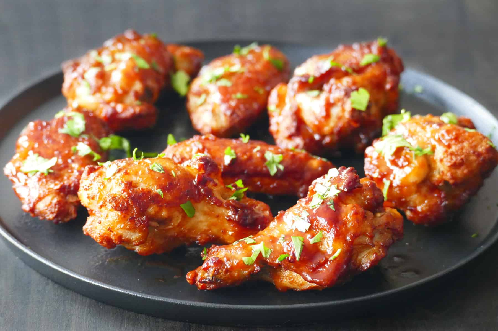

Chicken Wings

Description
Everything you need to know about buying, cooking, and serving chicken wings.
Ingredients
- 1kg Chicken Wings
- Salt
- Pepper
- Franks Hot Sauce
Cooking Methods
- Air-Fryer - ou can use your air fryer to get crispy wings without excess oil.
Spray the inside of your air fryer basket with cooking spray and arrange wings with space between them so they can crisp up.
Don't try to rush things by cooking the entire batch at once or else your wings won't get crispy.
- Grilled - Yep, wings are awesome on the grill.
Typically, grilled wings get a milder sauce, since the smoky, caramelized taste from the flames is the star.
If you're in love with your BBQ, Grill Master Chicken Wings are for you.
- Fried - When you just have to have classic chicken wings, coated and fried to a shattering crusty goodness, give these Restaurant-Style Buffalo Chicken Wings a try.
Home